01
Publication
Mobile Robotic Manipulator Based Harvesting Inside Vertical Farms
P. Rohith, M. Thejonath, A. Manoj, A. Sudheer
Advances in Robotics · 2023
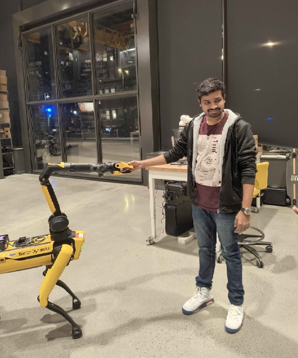
01 — About
I'm a robotics researcher at Northeastern University's Autonomy & Intelligence Lab, building systems that help robots plan and act safely when the world is only partially known. My current work spans risk-aware motion planning, contingency control, and learned traversability estimation for off-road autonomy.
My work spans the full autonomy stack, from perception and state estimation to planning, control, and ROS 2 deployment. With a foundation in mechanical design, fabrication, and manipulation, I approach algorithms with the physical system in mind—sensor limitations, compute constraints, robot dynamics, and the demands of reliable hardware deployment.
02 — Experience
Autonomy & Intelligence Lab · Northeastern University
Risk-aware Planning Safety Control ROS2
Robotics Research Center · IIIT Hyderabad
Part-time SLAM Multi-robot Spot · AgileX · UnitreeRobotics Lab · NIT Calicut
Mobile Robots Manipulation RoboconMedtronic
Medical Devices Engineering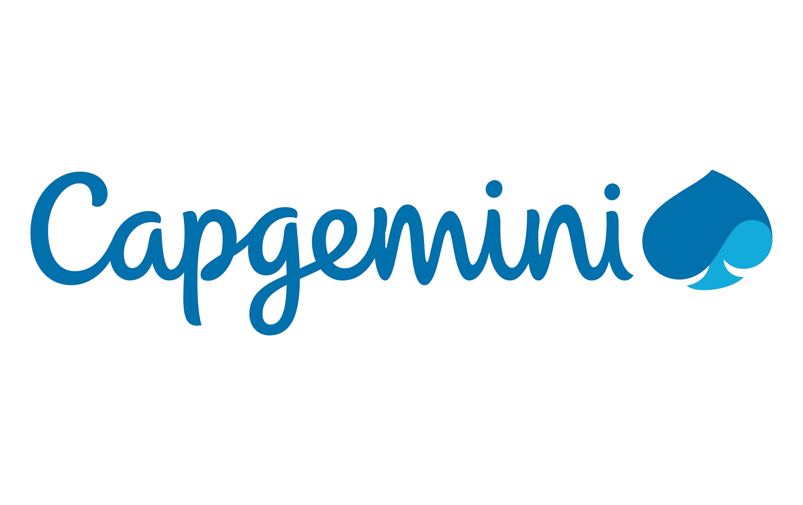
Capgemini – Stellantis
Embedded Systems Automotive03 — Projects
Featured projects
Flagship work across safe autonomy, perception, manipulation, and integrated robotic systems.
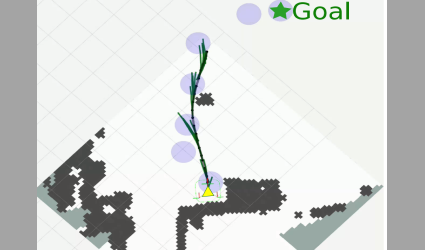
Risk-aware motion planning with nominal and backup trajectories for safe navigation under uncertainty.
Coordinated heterogeneous robots to reconstruct two seven-floor buildings with drift-resistant LiDAR–inertial mapping.
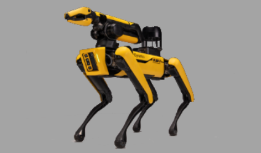
Large-scale indoor data collection and 3D mapping using Spot, LiDAR, stereo cameras, and RTAB-Map.
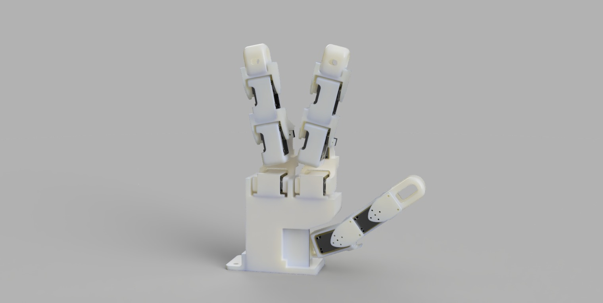
A custom dexterous hand designed for in-hand manipulation and adaptive pick-and-place tasks.
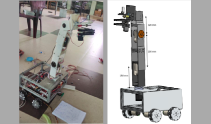
An autonomous mobile manipulator combining crop perception, mobility, gripping, and precision cutting.
An end-to-end reconstruction pipeline spanning feature extraction and matching, robust pose estimation, point-cloud generation, and bundle adjustment.
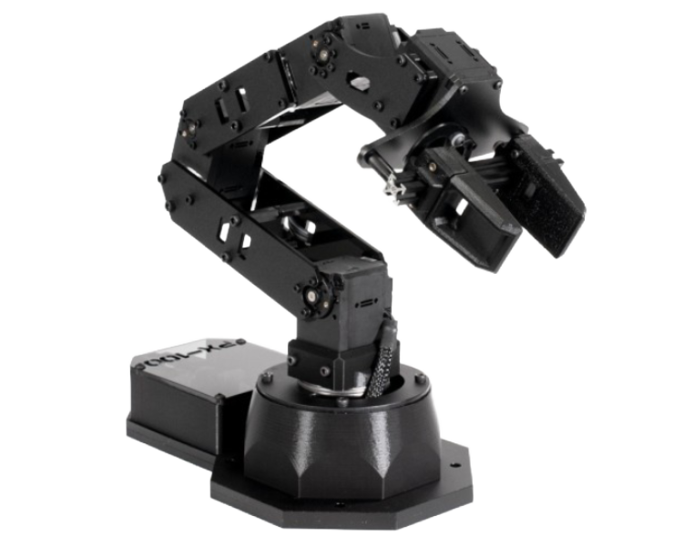
Collision-free manipulator trajectories using inverse kinematics, geometric avoidance, and A* search.
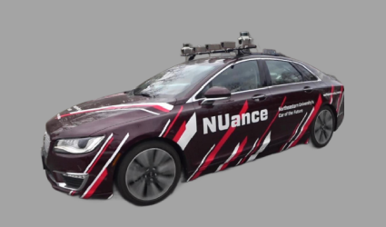
Vehicle-state estimation through GPS–IMU calibration, sensor characterization, filtering, and fusion.
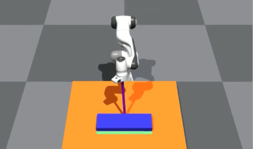
Simulator-in-the-loop MPPI for sampling-based control of complex, high-DOF manipulation tasks.
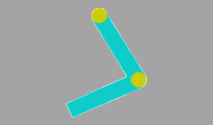
Energy shaping and LQR stabilization connected through a switching controller for an underactuated system.
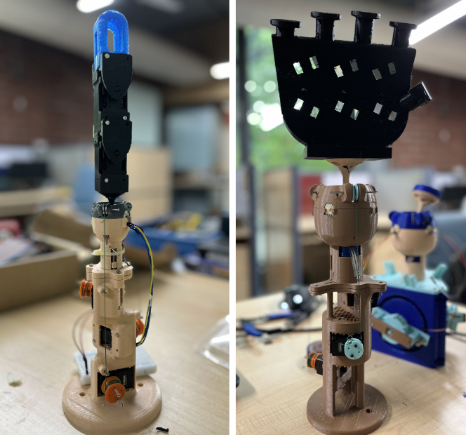
Human-inspired tendon-driven fingers and a wrist mechanism designed for compact, expressive motion.
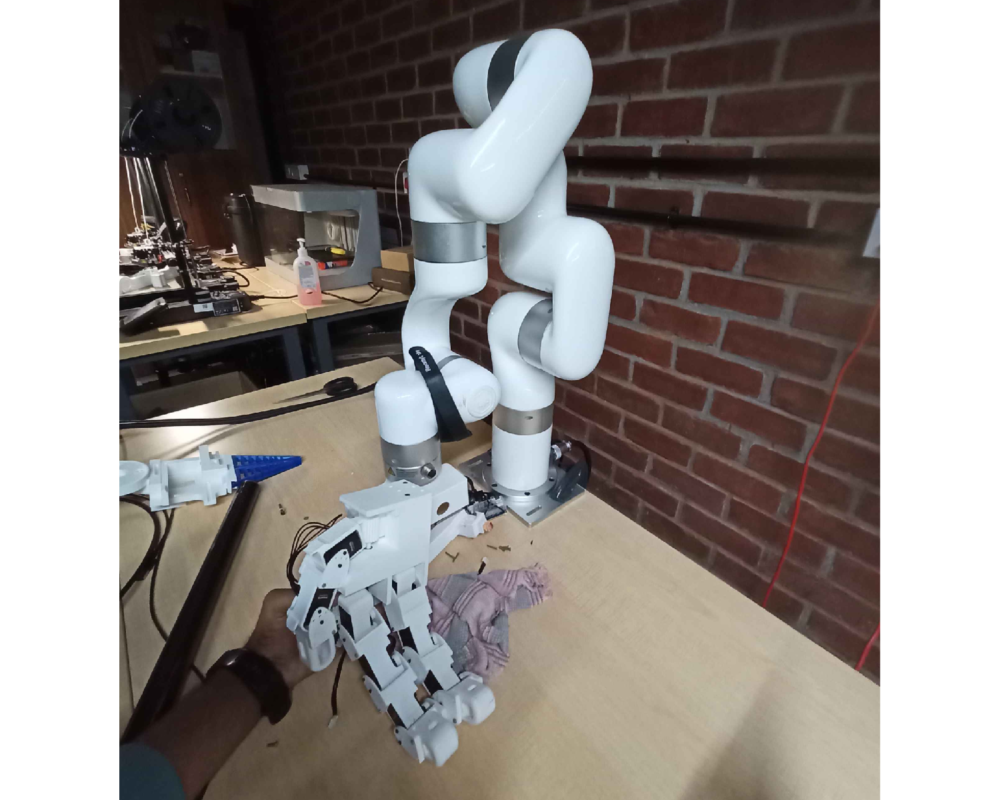
A custom arm integrating the bionic hand with PID and impedance control for adaptive manipulation.
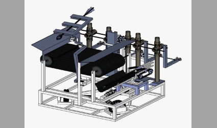
A coordinated dual-robot system combining target detection, navigation, and pneumatic actuation.
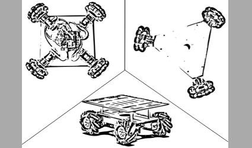
Three omnidirectional platforms with encoder feedback and PID control for responsive planar motion.
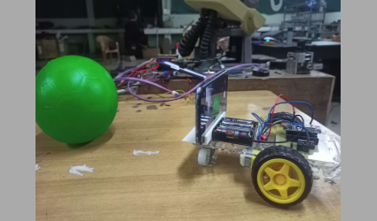
A compact vision-guided robot using contour detection and Wi-Fi motor control for autonomous tracking.
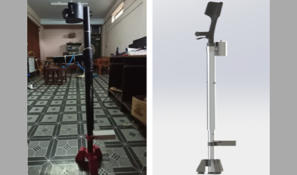
An assistive device combining automatic height adjustment, shock absorption, and stability mechanisms.
04 — Research & IP
P. Rohith, M. Thejonath, A. Manoj, A. Sudheer
Advances in Robotics · 2023
Vertical farming robotics
Application No. 202441084733
Assistive technology
05 — Capabilities
Contingency planning · MPPI · A* · Collision avoidance
Applied in Contingency MPPISLAM · Sensor fusion · Calibration · Localization
Applied in SLAM with SpotKinematics · Trajectory generation · Non-prehensile manipulation
Applied in Non-Prehensile ManipulationLQR · PID · Impedance control · Energy shaping
Applied in Acrobot Swing-UpLearned traversability · Off-road autonomy · PyTorch
Current research Off-road autonomyROS 2 deployment · Sensor integration · Embedded compute · Hardware validation
Applied in Vertical Farm HarvesterPython · C++ · MATLAB · Bash · Git · Docker
ROS 2 · PyTorch · TensorFlow
Gazebo · PyBullet · Isaac Sim · Isaac Lab
LiDAR · Stereo cameras · RTK GPS · IMU · NVIDIA Jetson · Raspberry Pi
SolidWorks · Fusion 360 · Onshape · FDM / SLA / SLS · CNC · Laser cutting
06 — Contact
I’m interested in robotics and autonomy opportunities where planning, learning, control, and hardware must work together as one reliable system.